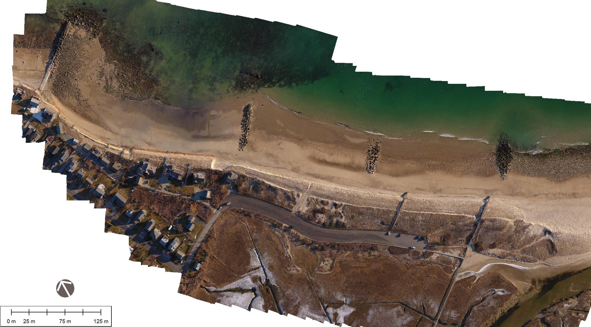
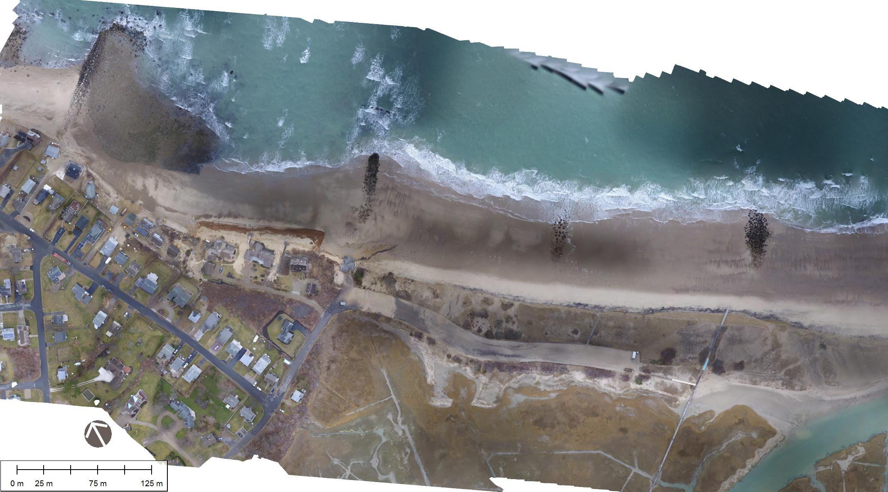

Northwest end of Sandwich Town Neck Beach
These images are orthophoto mosiacs made from unmanned aerial systems flown on March 16, 2017 and March 7, 2018 (after a two record-setting Nor'Easters).
The jQuery BeforeAfter plugin allows you to take two images and merge them so that a visitor can drag a slider over them to visually compare them.
Grab and drag the handle to compare images.

